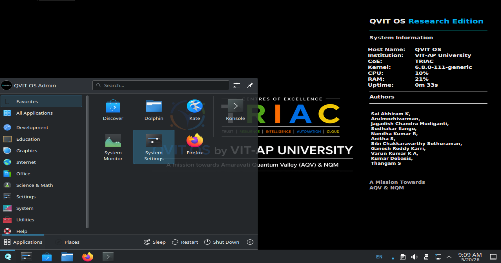
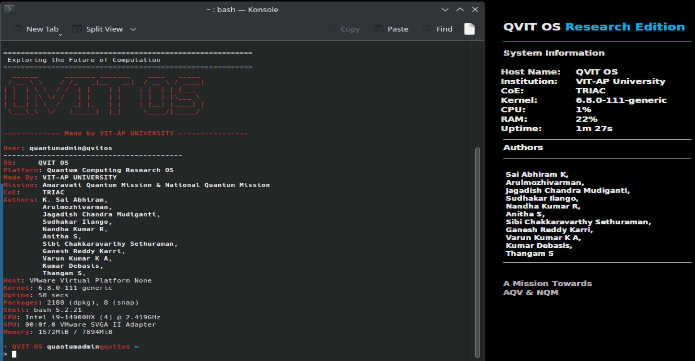
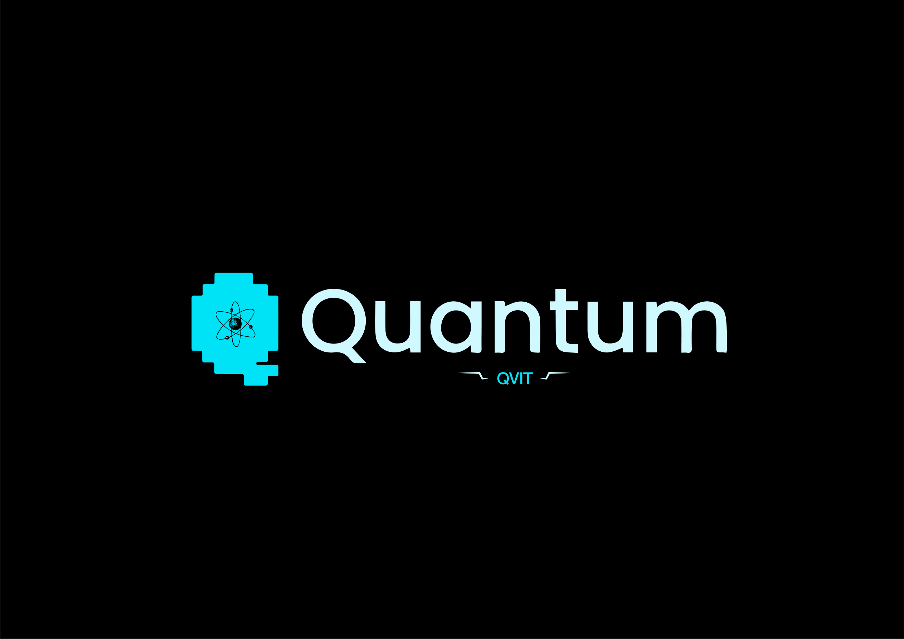

Built for Quantum Research. Designed for the Future.
QVIT OS is a customized Linux distribution packed with preconfigured quantum computing frameworks, diagnostic tools, and scientific development environments designed to accelerate research, education, and innovation.

desktop_dashboard2.png and place it in the assets/
folder
A high-performance research ecosystem ready out of the box
QVIT OS is a Quantum-Focused Linux Distribution designed to provide researchers, students, developers, and educators with a complete, integrated ecosystem for quantum computing experimentation and development.
Built on the rock-solid reliability of Ubuntu Server and utilizing the lightweight KDE Plasma desktop environment, QVIT OS eliminates the complexity of manually configuring quantum environments. It packages leading quantum SDKs, environments, and scientific stacks into a single, optimized workspace.
Bridging classical computing and quantum development
Forget dependency hell. Frameworks, drivers, and notebooks are integrated, isolated, and ready to use right after installation.
Designed explicitly for universities, innovation centers, CoE labs, and research publications to guarantee project reproducibility.
A seamless, browser-based environment for developing, executing, and visualizing quantum circuit computations interactively.
Simultaneously write circuits in Qiskit, apply machine learning in PennyLane, or design deep algorithms in TensorFlow Quantum.
Ubuntu Server core minimizes background resources, allocating maximum memory and CPU cycles directly to your quantum simulations.
Intuitive shortcuts, extensive commands, and interactive tools support educators teaching basic concepts and scientists publishing new models.
The building blocks of QVIT OS
Fully optimized out of the box. Essential libraries, virtualization tools, and compiler toolchains are pre-installed.
Easily manage Jupyter notebooks, run diagnostics, monitor resource performance, and manage scientific workspaces.
Equipped with customized bash/zsh prompt layouts, neofetch system status overlays, and quantum automation commands.
Inherits the kernel architecture, security updates, and active library repository ecosystem of Ubuntu Long Term Support (LTS).
Prevents dependency clashes by isolating tools into 5 specialized environments:
qiskit_env, qml_env, quantum_crpto,
penny_lane, and tfq_env.
Designed for fast deployment across university classrooms, research labs, institutional workstations, and VMs.
| Feature / Workflow | Traditional Linux Distribution | QVIT OS Workspace |
|---|---|---|
| Initial Configuration | Manual, multi-step environment configuration | Zero-setup, fully preconfigured |
| Quantum SDK Install | Requires manual pip/conda install & debugging | All major SDKs integrated natively |
| Dependency Management | High risk of framework version collisions | Isolated Conda environment architecture |
| System Footprint | Varying bloatware depending on distro | Lightweight server base + efficient DE |
| System Commands | Generic operating system utilities | Dedicated quantumctl CLI |
Deploy state-of-the-art quantum software stacks natively
Qiskit is a comprehensive software development kit for working with quantum computers at the level of circuits, pulses, and algorithms. In QVIT OS, it comes coupled with local simulators and cloud API endpoints.
from qiskit import QuantumCircuit
from qiskit.primitives import Sampler
# Create a 2-qubit Bell State circuit
qc = QuantumCircuit(2)
qc.h(0)
qc.cx(0, 1)
qc.measure_all()
# Simulate execution
sampler = Sampler()
result = sampler.run(qc).result()
print("Measurement probabilities:", result.quasi_dists)PennyLane is a cross-platform Python library for quantum machine learning, automatic differentiation, and optimization of hybrid quantum-classical computations. It integrates smoothly with PyTorch and TensorFlow.
import pennylane as qml
from pennylane import numpy as np
dev = qml.device("default.qubit", wires=1)
@qml.qnode(dev)
def circuit(params):
qml.RX(params[0], wires=0)
qml.RY(params[1], wires=0)
return qml.expval(qml.PauliZ(0))
# Output expected value
print(circuit([0.54, 0.12]))TensorFlow Quantum (TFQ) is a software framework for hybrid quantum-classical machine learning. It allows researchers to construct quantum data, quantum models, and classical neural networks in a single workflow.
import tensorflow as tf
import tensorflow_quantum as tfq
import cirq
# Define qubit and circuit
qubit = cirq.GridQubit(0, 0)
circuit = cirq.Circuit(cirq.X(qubit))
# Convert to TF tensor representation
tensor = tfq.convert_to_tensor([circuit])
print("Tensor quantum circuit:", tensor)Cirq is a Python software library for writing, manipulating, and optimizing quantum circuits, and then running them against quantum computers and simulators. It is tailored for Noisy Intermediate-Scale Quantum (NISQ) systems.
import cirq
# Define a line of qubits
qubits = cirq.LineQubit.range(3)
# Build a simple circuit
circuit = cirq.Circuit(
cirq.H(qubits[0]),
cirq.CNOT(qubits[0], qubits[1]),
cirq.CNOT(qubits[1], qubits[2])
)
print("Circuit Structure:\n", circuit)OpenFermion is an open-source library compiling and analyzing quantum algorithms to simulate fermionic systems, including quantum chemistry, materials science, and molecular behavior.
import openfermion as of
# Create a fermionic creation operator
op = of.FermionOperator('1^ 0')
print("Fermion Operator details:\n", op)QVIT OS incorporates a robust scientific library stack including NumPy, SciPy, Matplotlib, Pandas, and Scikit-Learn. They are bound together under an integrated JupyterLab framework for seamless notebook-based development.
import numpy as np
import matplotlib.pyplot as plt
# Classic data analysis and plotting setup
x = np.linspace(0, 10, 100)
y = np.sin(x)
print("Data prepared. Length:", len(x))
# Output plot via JupyterLab inline...Simplified workflow management powered by the quantumctl CLI
tool
Type these commands in the terminal simulator or run them inside QVIT OS to control your workspace.

terminal_interface.png and place it in the assets/ folder
Tailored environments for multiple fields and specialties
Dive straight into learning quantum computing algorithms without getting stuck in configuration errors.
Conduct highly complex multi-framework simulations in environments built for data integrity and repeatability.
Deploy uniform, pre-configured labs quickly across groups of student PCs or cluster servers.
Write, compile, and test code for hybrid classical-quantum software architectures in local environments.
Focus classroom time on core quantum concepts rather than fixing python packages and conda paths on student machines.
Build prototypes and interdisciplinary proof-of-concept projects in clean sandboxed systems.
Optimized configurations from desktop PCs to lab clusters
| Component | Minimum Specification |
|---|---|
| CPU | Intel Core i5 / AMD Ryzen 5 (or equivalent 4-Core CPU) |
| System RAM | 8 GB DDR4 |
| Storage | 60 GB Solid State Drive (SSD) |
| Graphics Unit | Standard integrated CPU graphics |
| Network Interface | Recommended (required for pulling updates or connecting to cloud servers) |
| Component | Recommended Specification |
|---|---|
| CPU | Intel Core i7/i9 or AMD Ryzen 7/9 (8-Core CPU or better) |
| System RAM | 16 GB – 32 GB Dual-Channel |
| Storage | 100+ GB SATA/NVMe SSD |
| Graphics Unit | NVIDIA or AMD Dedicated GPU (optional, for local acceleration) |
| Network Interface | High-speed stable connection |
| Component | Research & Simulation Lab Specification |
|---|---|
| CPU | Workstation/Server-Class CPU (Intel Xeon, AMD EPYC, or Ryzen Threadripper) |
| System RAM | 32 GB – 64 GB (or higher for large-qubit statevector simulations) |
| Storage | NVMe M.2 SSD (High Read/Write speed) |
| Graphics Unit | CUDA-capable NVIDIA GPU (e.g. RTX series) for accelerated QML training |
| Virtualization | Intel VT-x / AMD-V enabled in UEFI (required for VM deployments) |
Fully supports high-performance local simulation models (Statevector, Density Matrix, MPS).
Preconfigured APIs to execute circuits on real quantum systems at IBM, Google Quantum, Rigetti, IonQ, and D-Wave.
Designed for future deployment on local room-temperature quantum processor accelerator cards as the technology matures (Note: Conceptual target under active research; capability is not natively present in current release).
Get the latest release and start your quantum computing research

boot_logo.png and place it
in the assets/ folder
Clean ISO file for bare-metal installations on workstation computers or standalone laptops. Includes the full suite of pre-installed quantum SDKs, environments, and desktop configuration.
Importable pre-configured virtual appliance for fast deployment. Best for running QVIT OS side-by-side inside your existing Windows, macOS, or standard Linux distributions.
Review the comprehensive guides to install QVIT OS, manage virtual environments, deploy on clusters, or link notebooks to IBM cloud systems.
Answers to common queries about QVIT OS setup and features
Yes. QVIT OS is designed for everyone from absolute beginners to advanced researchers. Students can log in and launch JupyterLab with a single CLI command without having to install complicated python paths or resolve package issues.
No. QVIT OS includes high-performance local classical simulation libraries (such as Qiskit's Aer simulator) that simulate quantum circuits directly on your standard CPU and GPU.
Yes. Built-in SDK frameworks like Qiskit, PennyLane, and Cirq include client modules to authenticate with cloud quantum providers (like IBM Quantum, D-Wave, or Rigetti) to submit tasks to actual quantum processors.
Yes, QVIT OS is built entirely on open-source foundations (Ubuntu Server core, KDE Plasma, and open quantum SDKs) and we support and contribute back to open-source initiatives.
Absolutely. The operating system is designed to be easily deployed across virtual systems (using the preconfigured OVA file) or written to USB drives for cluster deployment in computer laboratories.
Have questions or feedback? We'd love to hear from you.
Whether you're interested in contributing to QVIT OS, reporting bugs, or just want to share your feedback about our quantum computing platform, please reach out.
kollurusaiabhiram2005@gmail.com
We typically respond within 24-48 hours
VIT-AP University - TRIAC CoE